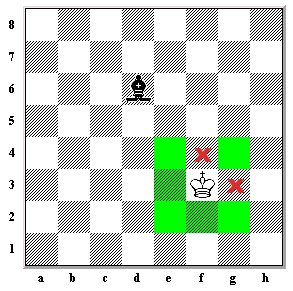
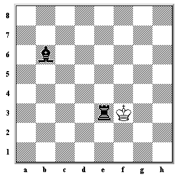
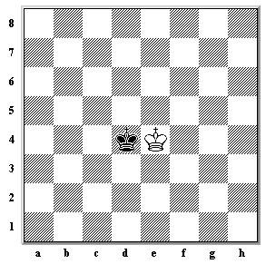

O Rei é a peça mais importante do tabuleiro de xadrez. Nunca pode ser capturado e se estiver em perigo, deve ser colocado em segurança imediatamente. Se não for possível tornar o Rei seguro, o jogo estará perdido. O Rei pode se mover uma casa em qualquer direção. Na imagem abaixo, o Rei pode se mover para uma das casas destacadas.

No entanto, o Rei nunca deve passar para uma casa que está sendo atacada pelas peças do oponente. Na imagem abaixo, o Rei não pode se mover para as casas marcadas com uma cruz porque o Bispo Preto está atacando essas casas.

Se uma peça estiver em uma casa para a qual o Rei pode se mover, o Rei pode capturar essa peça. Na imagem abaixo, o Rei pode capturar a Torre.

A posição abaixo é quase igual à da imagem acima. No entanto, existe uma diferença muito importante. O bispo agora está protegendo a torre para que, se o rei capture a torre, o rei seja atacado pelo bispo, dizemos que o rei estaria em xeque e as pretas conseguiriam capturar o rei no próximo movimento. O Rei nunca pode se mover para um perigo como este, então ele é incapaz de capturar a Torre.

Consequentemente, como o Rei nunca deve passar para uma casa que está sendo atacada por peças inimigas, dois Reis nunca podem ficar próximos um do outro no tabuleiro de xadrez. A posição na imagem abaixo é ilegal.
